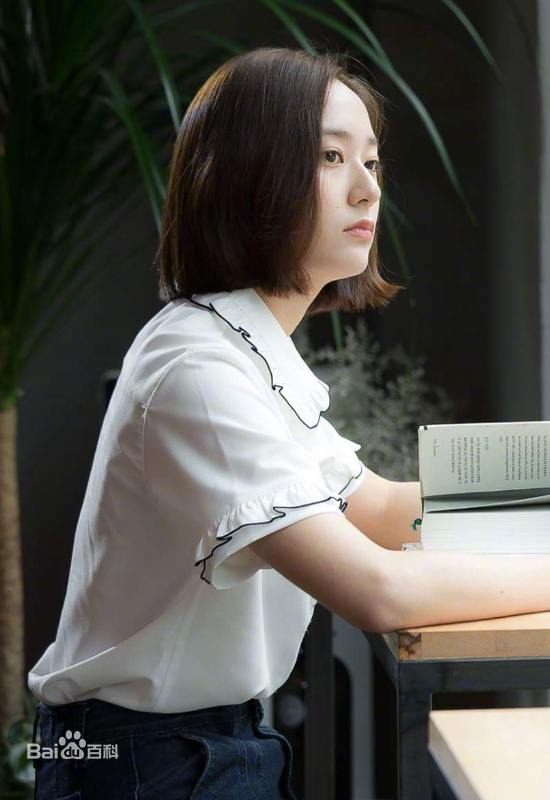
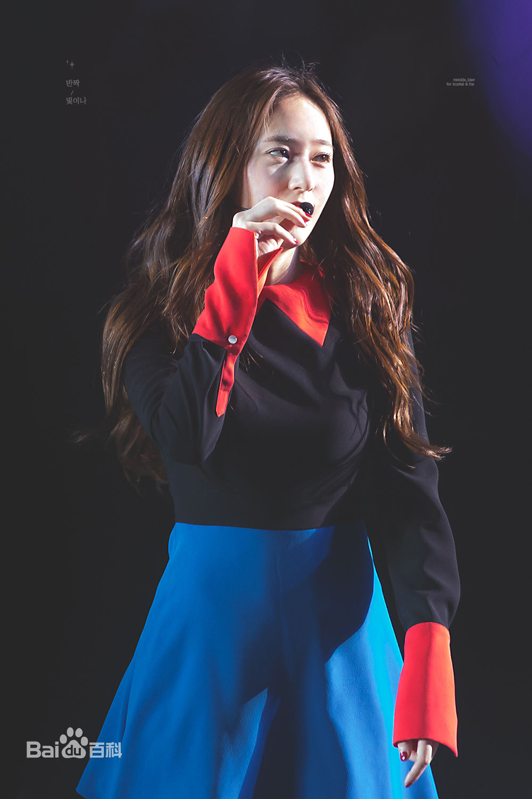
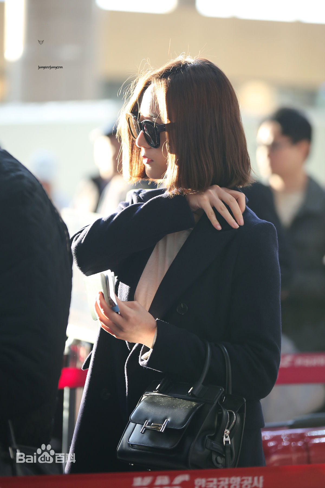
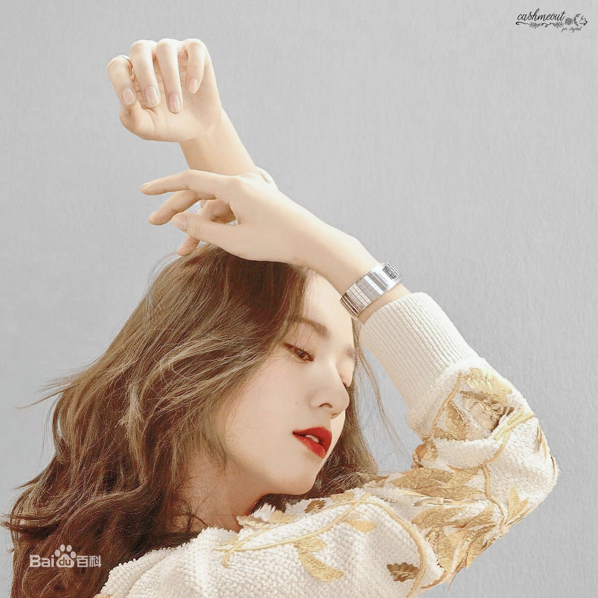
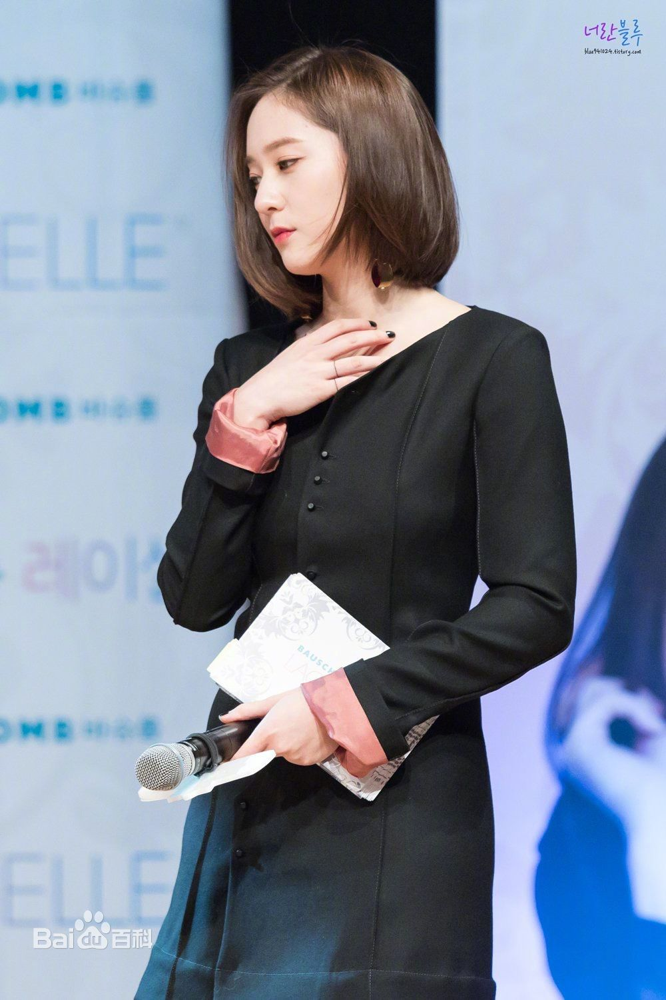
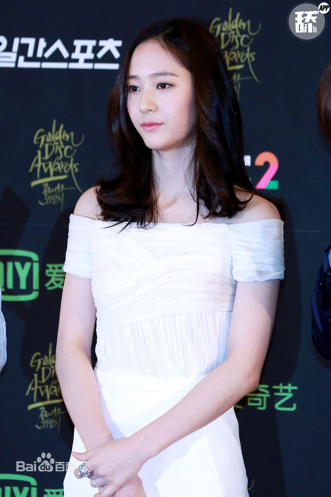

KRYSTAL
| 郑演员 | 舞台表演 | 签名会 | 冰上公主 |
|---|---|---|---|
|  |  | ||
| 私服秀 | 画报、代言 | 活动出席 | 郑MC |
|  |  |  |  |
郑秀晶（Krystal），1994年10月24日出生于美国加利福尼亚州旧金山，韩国女歌手、演员，女子演唱组合f(x)成员。
2000年，6岁的郑秀晶被星探发掘。2006年，12岁的她正式进入SM公司成为旗下练习生。2009年9月5日，以女子团体f(x)成员名义正式出道。2010年，参演了家庭情景喜剧《越看越可爱》，这是其首次参演电视剧 。 2011年，主演了情景喜剧《high kick 3》。2012年11月30日，担任了2012Mnet亚洲音乐盛典的特别MC。2013年，主演了青春喜剧《继承者们》。
2014年，凭借浪漫爱情励志剧《对我而言，可爱的她》获得了第51届韩国百想艺术大赏电视类最佳人气女演员奖 。2015年，主演了浪漫爱情短片《听见我的歌》。2016年，主演的网络迷你爱情剧《暧昧日记》播出。2017年2月15日，与金俊元合作的单曲《I don't wanna love you》公开；7月3日，主演的奇幻浪漫喜剧《河伯的新娘2017》播出。